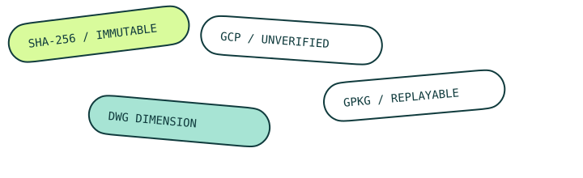

Source facts
源实体、样式、标签、SHA-256 与原生曲线事实。
9,717 ENTITIES02 WHY THIS EXISTS
一张 CAD 图可以有漂亮的线，也可以有正确的长度，但这并不自动证明它已经处于正确的地理位置。CAD2GIS 把这些声明拆开，让每一次理解、配准和交付都留下可审查的痕迹。
03 CRAFT INFINITE PRODUCT
从第一条源曲线到最后一个交付图层，五个阶段都可以独立阅读、独立校验、独立重放。
源实体、样式、标签、SHA-256 与原生曲线事实。
9,717 ENTITIES来源绑定的分类，未解析对象不会被伪装成已知资产。
281 UNRESOLVED训练点、独立检查点、相似变换、残差与覆盖度。
GCP / RESIDUALS几何、拓扑、长度和坐标精度四条互相独立的检查轨道。
4 TRACKSGeoPackage、QML、manifest 和证据图，动作可回放。
1,150 FEATURES04 ONE RUN / MANY PROOFS

05 INDEPENDENT CLAIMS
我们不会把一个绿色的总分当成全部答案。源几何、拓扑、长度和坐标精度各自拥有证据，各自拥有失败方式。
07 INSTALL THE AGENT
CAD2GIS Agent 是 canonical Python 流水线的薄接入层：插件注册一个技能与一个 MCP 服务，读取、转换、验证和交付仍由同一套本地运行时完成。
先按系统安装 uv，再从 main.zip 把 CLI 与 MCP 入口安装成隔离工具。--force 会修复仍指向已删除 worktree 的旧 editable 安装。
winget install --id=astral-sh.uv -e
uv tool install --python 3.12 --force "cad2gis[agent] @ https://github.com/Mola-maker/CAD2GIS/archive/refs/heads/main.zip"
cad2gis runtime install
Get-Command cad2gis-agent-mcp
cad2gis-agent-mcp --help
cad2gis doctor --deep --jsonAutoCAD/Core Console 只在 Windows 原生环境作为显式备用或并行核验 reader。
brew install uv libredwg
uv tool install --python 3.12 --force "cad2gis[agent] @ https://github.com/Mola-maker/CAD2GIS/archive/refs/heads/main.zip"
command -v cad2gis-agent-mcp
cad2gis-agent-mcp --help
cad2gis doctor --deep --jsonHomebrew 安装官方 LibreDWG CLI；AutoCAD/Core Console 不在 macOS 支持边界内。
curl -LsSf https://astral.sh/uv/install.sh | sh
export PATH="$HOME/.local/bin:$PATH"
uv tool install --python 3.12 --force "cad2gis[agent] @ https://github.com/Mola-maker/CAD2GIS/archive/refs/heads/main.zip"
cad2gis runtime install
command -v cad2gis-agent-mcp
cad2gis-agent-mcp --help
cad2gis doctor --deep --json配置项目支持的 LibreDWG/ODA reader；QGIS 审阅会话必须运行在同一个可见桌面环境。
curl -LsSf https://astral.sh/uv/install.sh | sh
export PATH="$HOME/.local/bin:$PATH"
uv tool install --python 3.12 --force "cad2gis[agent] @ https://github.com/Mola-maker/CAD2GIS/archive/refs/heads/main.zip"
cad2gis runtime install
command -v cad2gis-agent-mcp
cad2gis-agent-mcp --help
cad2gis doctor --deep --jsonWSL 只按 Linux 运行时验证；不承诺通过 WSL 跨边界控制 Windows AutoCAD 或 Windows QGIS GUI。
cad2gis 可执行✓ cad2gis-agent-mcp 在 PATH✓ doctor 报告 reader 状态MCP 服务默认失败关闭。路径不在 CAD2GIS_PROJECT_ROOTS 内时会停止，不会静默扩大文件访问范围。
# 仅用于授权当前工作区之外的数据
$env:CAD2GIS_PROJECT_ROOTS = "D:\survey-data;D:\shared-cad"export CAD2GIS_PROJECT_ROOTS="$HOME/projects:/srv/survey-data"
command -v cad2gis-agent-mcp所有 stdio 客户端都调用同一个 cad2gis-agent-mcp 入口。安装或修改配置后，请重启客户端并开启一个新任务。
codex plugin marketplace add Mola-maker/CAD2GIS --ref main
codex plugin add cad2gis-agent@cad2gis
codex plugin listMarketplace 名称由仓库声明为 cad2gis。该命令组在 Windows、macOS 和 Linux 中相同。
claude plugin marketplace add Mola-maker/CAD2GIS
claude plugin install cad2gis-agent@cad2gis-tools
claude plugin listClaude marketplace 名称是 cad2gis-tools；运行时与项目根目录要求和 Codex 相同。
New-Item -ItemType Directory -Force .cursor | Out-Null
Invoke-WebRequest "https://raw.githubusercontent.com/Mola-maker/CAD2GIS/main/plugins/cad2gis-agent/clients/cursor.mcp.json" -OutFile ".cursor/mcp.json"mkdir -p .cursor
curl -fsSL "https://raw.githubusercontent.com/Mola-maker/CAD2GIS/main/plugins/cad2gis-agent/clients/cursor.mcp.json" -o .cursor/mcp.json模板通过 ${workspaceFolder} 自动使用当前 DWG 工作区，再重启 Cursor。
New-Item -ItemType Directory -Force .vscode | Out-Null
Invoke-WebRequest "https://raw.githubusercontent.com/Mola-maker/CAD2GIS/main/plugins/cad2gis-agent/clients/vscode.mcp.json" -OutFile ".vscode/mcp.json"mkdir -p .vscode
curl -fsSL "https://raw.githubusercontent.com/Mola-maker/CAD2GIS/main/plugins/cad2gis-agent/clients/vscode.mcp.json" -o .vscode/mcp.json模板通过 ${workspaceFolder} 自动使用当前 DWG 工作区，再重启 VS Code / GitHub Copilot agent mode。
python -m cad2gis.agent_mcp --transport streamable-http --host 127.0.0.1 --port 8768客户端连接 http://127.0.0.1:8768/mcp。不要直接暴露到公网；远程部署必须经过带身份认证的 TLS 反向代理。
codex plugin marketplace upgrade cad2gis
codex plugin add cad2gis-agent@cad2gis
codex plugin remove cad2gis-agent@cad2gisclaude plugin marketplace update cad2gis-tools
claude plugin update cad2gis-agent@cad2gis-tools
claude plugin uninstall cad2gis-agent@cad2gis-tools第一次消息不要直接要求“转换”。先让智能体调用 get_capabilities，确认入口、授权根目录、reader 与 prompt contract 都已就绪。
请先调用 CAD2GIS 的 get_capabilities，列出已授权项目根目录、DWG reader 可用状态和 prompt_contract.version。如果 cad2gis-agent-mcp 不可用、路径未授权或 reader 缺失，请停止并给出修复步骤，不要假装已经转换。每张新图都建立自己的 source-bound profile。让智能体按确定顺序检查、onboard、转换并审计，不复用另一张 DWG 的 mapping 或数量门禁。
使用 CAD2GIS 检查并转换 "<ABSOLUTE_PATH_TO_DWG>"。先调用 get_capabilities 和 inspect_source；为这张图建立独立的 source-bound onboarding；分别报告源几何、拓扑、长度和坐标精度；保留 unresolved；转换后调用 inspect_run 与 audit_run，只有 audit_status=PASS 才把交付物列为可交付。当前显示：步骤 1，安装运行时。
cad2gis-agent-mcp 不在客户端继承的 PATH；用同一用户环境安装运行时，然后重启客户端。
把 DWG 所在父目录加入 CAD2GIS_PROJECT_ROOTS，不要把整个磁盘或插件缓存目录加入授权。
先运行 cad2gis runtime install，再执行 cad2gis doctor --deep --strict --json；AutoCAD 只是显式可选回退。
这不是插件断线。它表示至少一条独立证据轨道仍需复核，例如没有测量 GCP 或仍有 unresolved 对象。
08 REPLAY THE RUN
按真实 Hutabohu 派生运行的证据顺序重放：读取、语义、配准、独立验证与交付。这里展示的是可审查记录，不是假装正在运行的后端。
cad2gis convert hutabohu.dwg --crs EPSG:3857 --evidence-first557e01413c39… pinned
09 OPEN THE RUN
工作台现已加载 10 份来自 run/delivery.gpkg 的真实派生运行，覆盖 Gorontalo、Aceh、Sidoarjo、Pontianak、Manado、Semarang、Palu 与 Serang。公开页面不包含原始 DWG、GeoPackage 或本机路径。
——